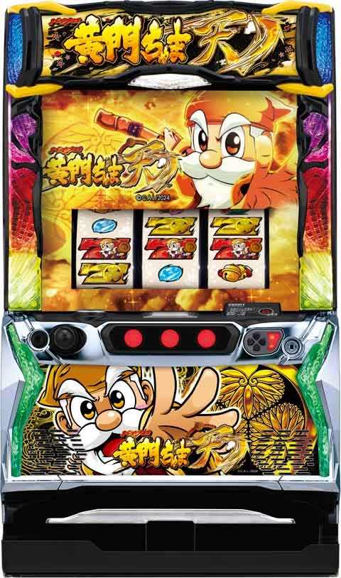
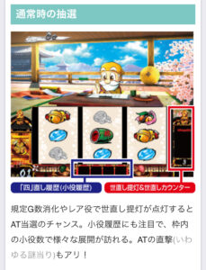
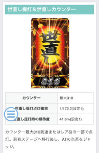
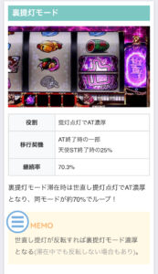

L黄門ちゃま天


狙い目
【リセット狙い】
120Gから
or
1スルーから
※朝イチに左上G数と右下G数がずれていれば1スルーしてる事がわかる？
※千本桜に移行した場合は10-11Gズレる。
【AT間天井狙い】
実ゲーム間
非天使ST後 590G
天使ST後 720G
※天井到達時続行する場合も考慮なら50Gボーダー下げる
世直しカウンター間 210G
前回天井後 0Gから
天井短縮時 0Gから
※実ゲーム間、世直しカウンター間はその他の条件が悪い時の狙い目です。
※天井短縮はダブルちゃんモード移行時。
※天井後は天井短縮時は有効。スルー天井は該当しない。
【天井短縮狙い】
AT獲得枚数が100枚以下だと50%で天井短縮。
32G消化時ダブルちゃん出現でAT当選まで。
【実ゲーム数ゾーン狙い】
310Gゾーン狙い 260Gから
世直しカウンターが310抜け後に続行出来る数値なら220Gから
【天使ST後】
150Gから提灯点灯まで
有利切れ伴う天使ST後 0Gから提灯点灯まで
※1スルーしていたら打てない。
※有利切れについては有利区間切れ狙いを参照。
※25%裏提灯モードが恩恵のため、裏提灯モードなら提灯点灯が1回外れるまで。
※終了画面で花火が出たら0Gから1回提灯点灯まで？
天使ST後の履歴の見方はこちら

【裏提灯モード狙い】
滞在濃厚ならATまで。
天使ST後25%で滞在。
前回裏提灯モードの場合は70%でループするため、1回提灯点灯するまで打つ。
【飛脚】
荷物の大きさで内部ポイント示唆。解析出てないが1番大きいのが出ればAT当選まで？
【スルー天井狙い】
積極派 5スルー
慎重派 6スルー
※スルー回数は確認出来ない？
【有利区間切れ狙い】
有利区間+1400枚以上で天使STは有利切れ？
その場合は世直しモードB移行で0Gから1回提灯点灯まで打てそう。
やめ時
引戻しゾーン見て即やめ。
ゾーン狙い、世直しカウンター狙い時 外れたらやめ。狙い目に該当する項目あれば続行。
その他
通常時の抽選

世直し提灯、世直しカウンター

裏提灯モード

ダブルちゃんモード

飛脚さん

参考元
基本情報
- メーカー: オリンピア
- 機械割: 97.5% 〜 112.3%
- 導入開始日: 2024年09月02日（月）
- ゲーム性概要: パチスロ黄門ちゃまシリーズ20周年に登場する、『パチスロL黄門ちゃま天』。初当り＝ATとなる直ATタイプで、ATは純増約4枚/Gのセット数管理型。レア役を引けば必ずセットストックを獲得する仕様で、強レア役なら複数ストックの可能性もあり。セットストックの特化ゾーンも搭載されている。AT終了後は期待度約50%の引き戻しゾーンへ突入。引き戻し期待度約80%を誇る「天使ST」も搭載されていて、一度突入すれば引き戻し失敗まで「天使ST」が継続。「大天使」に突入すればさらなる恩恵も!!


打ち方
打ち方・小役
打ち方（小役狙い）
［最初に狙う絵柄］

左リール上段付近に白7を目押し。
［白7下段停止時］ 成立役：ハズレorリプレイorベルor弱チャンス目or紅ええ目

ベルは上段が1枚、右下がりが3枚。
［チェリー上段停止時］ 成立役：弱チェリーor強チェリー

［チェリー下段停止時］ 成立役：弱チェリーor強チェリーor強紅ええ目

［スイカ上段停止時］ 成立役：スイカor強チャンス目orええチャンス目

［狙ええ目］


狙えカットイン発生時は狙ええ目停止のチャンス。停止個数が多いほど期待できる。 1個停止が弱レア役、2個停止が強レア役扱い。3個停止は特殊役となる。
［レア役の停止例］

変則押しはNG

押し順ナビ非発生時は左1stでの消化を推奨だ。
解析情報通常時
小役関連
小役確率
| 役 | 確率 |
|---|---|
| リプレイ | 1/7.3 |
| 押し順ベル（こぼし含む） | 1/1.8 |
| 共通ベル | 1/25.7 |
| スイカ | 1/128.0 |
| 弱チェリー | 1/128.0 |
| 強チェリー | 1/668.7 |
| 弱チャンス目 | 1/168.9 |
| 強チャンス目 | 1/668.7 |
| ええチャンス目 | 1/2048.0 |
| 紅ええ目 | 1/1/655.4 |
※レア役合算は1/37.7（狙ええ目除く）
紅ええ目の詳細確率
| 停止パターン | 確率 |
|---|---|
| 下段リリベ | 1/1638.4 |
| 中段リリベ | 1/1638.4 |
| 右下がりリリベ | 1/6553.6 |
| 右上がりリリベ | 1/6553.6 |
状況別の狙ええ目合算確率
| 役 | 合算確率 |
|---|---|
| 非ミトン状態 | 1/442.3 |
| ミトン小 | 1/57.0 |
| ミトン中 | 1/36.9 |
| ミトン大 | 1/19.1 |
| 紅ええモード | 1/6.5 |
| 千年桜ステージ | 1/26.4 |
| 陸ステージ | 1/153.7 |
| 海ステージ | 1/57.0 |
| 空ステージ | 1/11.4 |
| 天使ST | 1/11.4 |
※陸ステージ～天使STは引き戻しゾーン ※千年桜ステージの確率は設定1の数値
状況別の狙ええ目確率詳細
| 役 | 1個停止 | 2個停止 | 3個停止 |
|---|---|---|---|
| 非ミトン状態 | 1/589.5 | 1/1820.8 | 1/65621.8 |
| ミトン小 | 1/65.5 | 1/455.2 | 1/13079.2 |
| ミトン中 | 1/45.3 | 1/202.1 | 1/10974.3 |
| ミトン大 | 1/22.2 | 1/140.1 | 1/8114.1 |
| 紅ええモード | 1/6.9 | 1/115.2 | 1/8231.8 |
| 千年桜ステージ | 1/32.9 | 1/137.5 | 1/4527.1 |
| 陸ステージ | 1/196.3 | 1/724.2 | 1/31979.4 |
| 海ステージ | 1/65.5 | 1/455.3 | 1/10847.1 |
| 空ステージ | 1/13.9 | 1/68.6 | 1/1526.4 |
| 天使ST | 1/13.9 | 1/68.6 | 1/1526.4 |
※陸ステージ～天使STは引き戻しゾーン ※千年桜ステージの確率は設定1の数値
［通常A・通常B滞在時］世直し提灯点灯当選率
※弱レア役の履歴3個と強レア役の履歴2個、狙ええ目3個停止は点灯濃厚
［高確滞在時］世直し提灯点灯当選率
| 役 | 当選率 |
|---|---|
| 弱レア役［履歴1個］ | 14.5% |
| 弱レア役［履歴2個］ | 33.2% |
| 強レア役［履歴1個］ | 100% |
※弱レア役の履歴3個と強レア役の履歴2個、狙ええ目3個停止は点灯濃厚
［有利区間移行時］世直し提灯点灯当選率
| 役 | 当選率 |
|---|---|
| 弱レア役 | 0.4% |
| 強レア役 | 25.0% |
| 特殊役 | 100% |
滞在している状態不問で、弱レア役の履歴4個と、強レア役の履歴3個、特殊役の履歴2個はAT本前兆当選濃厚となる。
内部状態関連
内部状態移行
通常時には通常A・通常B・高確の3種類があり、レア役時の世直し提灯点灯期待度が変化。状態はおもにレア役で昇格して、通常Bからの転落はなし。高確中はリプレイの一部で通常Aor通常Bに転落する。
内部状態性能
| 項目 | 内容 |
|---|---|
| 種類 | 通常A・通常B・高確率 |
| 特徴 | 上位の状態ほどレア役時の 世直し提灯点灯率アップ |
| 昇格契機 | レア役時の一部で1or2段階上の状態へ |
| 高確からの転落契機 | リプレイの一部で通常AorBへ |
| その他 | 通常Bから通常Aの転落はない |
初期内部状態振り分け （設定変更後・AT終了時・世直し提灯点灯時）
| 移行先 | 振り分け |
|---|---|
| 通常A | 75.0% |
| 通常B | 12.5% |
| 高確 | 12.5% |
※千年桜ステージ終了後は必ず通常Bへ
内部状態昇格率
| 設定 | 弱レア役 ［履歴1個］ | 弱レア役 ［履歴2個］ | 強レア役 ［履歴1個］ |
|---|---|---|---|
| 1 | 25.0% | 55.1% | 25.0% |
| 2 | 26.6% | 56.3% | 26.6% |
| 3 | 27.7% | 57.8% | 27.7% |
| 4 | 30.1% | 60.2% | 30.1% |
| 5 | 32.0% | 64.5% | 32.0% |
| 6 | 33.2% | 66.8% | 33.2% |
※弱レア役の履歴3個と強レア役の履歴2個は世直し提灯点灯濃厚なので抽選しない
昇格当選時の移行先振り分け
| 移行先 | 通常A滞在時 | 通常B滞在時 |
|---|---|---|
| 通常Bへ | 99.2% | － |
| 高確率へ | 0.8% | 100% |
高確中リプレイ時の転落率
| 移行先 | 転落率 |
|---|---|
| 通常AorBへ | 25.0% |
高確転落時の移行先振り分け
| 設定 | 通常Aへ | 通常Bへ |
|---|---|---|
| 1 | 89.8% | 10.2% |
| 2 | 89.1% | 10.9% |
| 3 | 88.3% | 11.7% |
| 4 | 87.5% | 12.5% |
| 5 | 84.0% | 16.0% |
| 6 | 83.2% | 16.8% |
高設定ほど昇格しやすく、転落した場合も通常B以上へ移行しやすいため「通常B以上」の滞在比率が高い。
世直し提灯
世直し提灯点灯

世直し提灯はレア役時の抽選や310G消化ごとに点灯。点灯した時点でAT期待度は40%以上（高設定ほど優遇）。 基本的に AT当選時は世直し提灯点灯→前兆ステージ（世直し夜行）突入を経て告知 される。 世直し提灯点灯までの310Gは世直し提灯の下側に表示されていて、通常のゲーム数消化による抽選（千年桜ステージや天井など）とは別個のものとなっている（通常のゲーム数は画面左上に表示）。
世直し提灯点灯（世直し前兆）性能
| 項目 | 内容 |
|---|---|
| 点灯契機 | レア役時の抽選、310G消化ごとなど |
| AT期待度 | 41.6%～60.0% |
| その他 | 終了後は内部状態を再抽選 |
世直し提灯点灯確率
| 設定 | 前兆のゲーム数抜き | 前兆のゲーム数込み |
|---|---|---|
| 1 | 1/143.5 | 1/172.2 |
| 2 | 1/141.9 | 1/170.6 |
| 3 | 1/141.2 | 1/169.8 |
| 4 | 1/139.2 | 1/167.6 |
| 5 | 1/138.1 | 1/166.4 |
| 6 | 1/134.7 | 1/162.8 |
※内部状態を考慮した平均確率
世直し提灯点灯時のAT期待度
| 設定 | 期待度 |
|---|---|
| 1 | 41.6% |
| 2 | 43.0% |
| 3 | 47.2% |
| 4 | 53.2% |
| 5 | 58.3% |
| 6 | 60.0% |
「四」直し履歴
「四」直し履歴概要

いわゆる小役履歴で、4G分の小役が表示。ベルが複数個停止すればミトン状態アップのチャンス、レア役の複数個停止は期待度アップとなる。同じ弱レア役でも、履歴2個なら抽選値は大幅に優遇される。
「四」直し履歴の抽選
| 表示役 | 抽選内容 |
|---|---|
| ベル | ● ミトン状態の昇格を抽選 ● 履歴3個時はミトン状態昇格濃厚 |
| 弱レア役 （青水晶） | ● 内部状態昇格や世直し提灯点灯を抽選 ● 履歴3個時は世直し提灯点灯濃厚 ● 履歴4個時はAT本前兆濃厚 |
| 強レア役 （紫水晶） | ● 内部状態昇格や世直し提灯点灯を抽選 ● 履歴2個時は世直し提灯点灯濃厚 ● 履歴3個時はAT本前兆濃厚 |
| 特殊役 | ● 履歴1個時は世直し提灯点灯濃厚 ● 履歴2個時はAT本前兆濃厚 ● 狙ええ3個停止はAT本前兆濃厚 |
紅ええモード（ミトン状態）
ミトン状態＆紅ええモード概要
通常時はベル揃い時に、 狙ええ目の確率を管理 するミトン状態（小・中・大・紅ええモードの4段階）の昇格を抽選。「四」直し履歴（小役履歴）のベル個数が多いほど昇格しやすい。 ミトン状態小〜大は保証ゲーム消化後のベル・レア役以外で転落（1段階）するが、最上位状態の紅ええモードは4G/セットの継続率管理で、狙ええ目揃い1回の最低保証がつく。
［ミトン状態］

緑の豚（ミトン）が登場して状態を示唆。
［紅ええモード］

紅ええモード移行時は画面の左右に帯が表示される。
ミトン状態 性能
| 項目 | 内容 |
|---|---|
| 移行＆昇格契機 | ● ベルの一部 |
| 種類 | ● ミトン小・ミトン中・ミトン大 |
| 優遇要素 | ● 上位の状態ほど狙ええ目確率がアップ |
| 保証ゲーム数 | ● 紅ええモード以外への昇格時：10G ● 再セット抽選当選時：10G ● モード転落時：5G ● 通常開始時（設定変更時以外）：30G |
紅ええモード 性能
| 項目 | 内容 |
|---|---|
| 移行契機 | ● ミトン大滞在中のベルの一部 ● 紅ええ目 |
| 継続ゲーム数 | ● 4G/セット |
| 継続率 | ● 50or67or75or80or90% |
| 優遇要素 | ● 狙ええ目確率が約1/6.5にアップ |
| その他 | ● 狙ええ目の1回保証あり（成立するまで継続） ● 強紅ええ目経由時は67%継続以上濃厚 |
ミトン状態＆紅ええモードの狙ええ目停止個数別確率
| 役 | 1個停止 | 2個停止 | 3個停止 |
|---|---|---|---|
| 非ミトン状態 | 1/589.5 | 1/1820.8 | 1/65621.8 |
| ミトン小 | 1/65.5 | 1/455.2 | 1/13079.2 |
| ミトン中 | 1/45.3 | 1/202.1 | 1/10974.3 |
| ミトン大 | 1/22.2 | 1/140.1 | 1/8114.1 |
| 紅ええモード | 1/6.9 | 1/115.2 | 1/8231.8 |
ミトン状態＆紅ええモードの狙ええ目合算確率
| 役 | 合算 |
|---|---|
| 非ミトン状態 | 1/442.3 |
| ミトン小 | 1/57.0 |
| ミトン中 | 1/36.9 |
| ミトン大 | 1/19.1 |
| 紅ええモード | 1/6.5 |
通常開始時の初期ミトン状態振り分け （設定変更時除く）
| ミトン状態 | 振り分け |
|---|---|
| ミトン小 | 93.8% |
| ミトン中 | 5.9% |
| ミトン大 | 0.4% |
ミトン状態昇格率＆再セット抽選当選率
| 役 | 昇格率 | 非昇格時の再セット |
|---|---|---|
| ベル［履歴1個］ | 0.4% | 0.4% |
| ベル［履歴2個］ | 20.3% | 16.8% |
| ベル［履歴3個］ | 100% | － |
| 紅ええ目 | 紅ええモード濃厚 | － |
ミトン状態の昇格抽選に漏れた場合は、再セットを抽選。どちらの抽選に当選した場合でも10Gの保証ゲームが付与される（紅ええモード移行時を除く）。
ミトン状態転落率（保証ゲーム数なし時）
| 役 | 転落率 |
|---|---|
| ベル＆レア役以外 | 16.8% |
千年桜ステージ
千年桜ステージ概要

規定ゲーム数消化時の抽選で移行する10G固定の世直し提灯点灯超高確率状態。当選時は最大10Gの前兆を経て突入する。 滞在中は狙ええ目確率が大幅にアップするだけでなく、レア役は世直し提灯点灯＝40%以上がAT当選となる。
千年桜ステージ性能
| 項目 | 内容 |
|---|---|
| 移行契機 | 規定ゲーム数消化 ［50G・100G・310G・470G・710G］ |
| 継続ゲーム数 | 10G固定 |
| 世直し提灯点灯期待度 | 約50%（設定1） |
| 滞在中の特徴 | 狙ええ目確率アップ、 レア役成立で世直し提灯点灯濃厚 |
| その他 | 終了後は通常Bへ移行 |
千年桜ステージの狙ええ目確率（設定1）
| 役 | 確率 |
|---|---|
| 1個停止 | 1/32.9 |
| 2個停止 | 1/137.5 |
| 3個停止 | 1/4527.1 |
| 合算 | 1/26.4 |
千年桜ステージ移行率
当選時は1〜10Gの前兆を経て突入する。
EXレア役ゾーン
EXレア役ゾーン概要
弱レア役（弱チェリー・弱チャンス目・スイカ・狙ええ目1個）時に抽選される、10G間「四」直し履歴にレア役が1個固定で設置される状態。消化中は保証ゲーム数の加算も抽選される。
EXレア役ゾーン性能
| 項目 | 内容 |
|---|---|
| 移行契機 | 弱レア役・狙ええ目1個時の5.1% |
| 保証ゲーム数 | 10G |
| 転落契機 | 保証ゲーム数終了後のハズレorリプレイ成立 |
| 滞在中の特徴 | 「四」直し履歴にレア役が固定で1個設置 |
| その他 | 滞在中に再当選すると保証ゲーム数が10G加算 |
特殊モード
ダブルちゃんモード概要

ATまでのゲーム数天井を500G＋αに短縮するモードで、AT終了後に突入を抽選。ATが100枚以下で終わった場合は約50%で突入する。 突入時はAT終了後、32G消化後の演出非発生時にダブルちゃん（画面左上）が登場してモード滞在中であることを告知してくれる。
ダブルちゃんモード性能
| 項目 | 内容 |
|---|---|
| 移行契機 | AT終了時の一部 ※ATが100枚以下で終わった場合は移行率優遇 |
| 恩恵 | AT間天井が500G＋αに短縮 |
| 終了契機 | AT当選時の一部（天井経由時は必ず終了） |
| その他 | 天井以外でATに当選した場合は25.0%で ダブルちゃんモードが継続 |
裏提灯モード概要
AT終了後に突入する 「世直し提灯点灯＝本前兆」 となるモードで、突入後は約70%で継続するため、強力なトリガーとなり得る。 突入のメインルートは天使ST終了後だが、通常のAT終了後も抽選されている。

世直し提灯点灯時に文字が反転すれば裏提灯モード濃厚。ただし、裏提灯モード中でも文字が反転しないこともある。
裏提灯モード性能
| 項目 | 内容 |
|---|---|
| 移行契機 | AT終了時の一部、天使ST終了後は25.0%で突入 |
| 恩恵 | 世直し提灯点灯で本前兆濃厚 |
| 継続率 | 70.3% |
飛脚ポイント
飛脚ポイント概要

様々なタイミングで内部的な飛脚ポイントが減算されていき、0ptになると、 世直し提灯点灯がフェイクでも本前兆に書き換えてくれるうえ、天運チャンスも発動 する。 飛脚出現時は荷物のサイズで残りポイントが示唆される。示唆演出が発生した時点で機械割100%以上となるため、AT当選まで打つことをオススメだ。
解析情報ボーナス時
ええじゃないかラッシュ（AT）
AT概要

セット管理型のATで、消化中は レア役を引けば必ずVストックを獲得、強レア役なら複数ストック濃厚 だ。強レア役時の一部でゲーム数上乗せ（天と地のジャッジメント）を獲得できる場合もあり。 セット継続ごとに天カウンタが進行していき、5個では「天運チャンス」、10個目では「天ルーレット」を獲得。一周した後（11連目以降）も同様の抽選がおこなわれる（15連目で天運チャンス、20連目で天ルーレット）。
ええじゃないかラッシュ（AT）性能
| 項目 | 内容 |
|---|---|
| 継続ゲーム数 | 1セット目：30Gor50G 2セット目以降：10G |
| 1Gあたりの純増 | 約4.0枚 |
| 消化中の抽選 | レア役・狙ええ目成立でVストック ※強レア役の一部でVストック＋ゲーム数上乗せ |
| 平均Vストック確率 | 1/20.4 |
| 平均継続 | 5.4セット |
| その他 | 天カウンタ5個で天運チャンス、 10個で天ルーレット濃厚 |
| その他 | 500or1000or1500枚到達時に テンプテーションゲームを抽選 |
初回セットのゲーム数振り分け
| ゲーム数 | 振り分け |
|---|---|
| 30G（赤7揃い） | 87.5% |
| 50G（金7揃い） | 12.5% |
［天カウンタ］

［Vストック］

倍じゃないかラッシュ

AT当選時の一部で突入する「ATセットのゲーム数が2倍」になる状態だ。
［AT待機場面で倍ちゃん登場］

［初期ゲーム数が2倍］

天運チャンス＆覚醒
天運チャンス

AT5セット目かつ以降は10セットおき（15・25セット目など）に突入する1G完結のええじゃないか覚醒（Vストック特化ゾーン）の種別ジャッジ。AT初当り時に決まっている初期天運レベルと成立役を参照して抽選される。
天運チャンス性能
| 項目 | 内容 |
|---|---|
| 突入契機 | 天カウンタ5個到達時、天ルーレット経由 |
| 継続ゲーム数 | 1G固定 |
| 消化中の抽選 | 覚醒の種類を決定 |
| その他 | レア役を引けば天運レベル2以上 ※強レア役なら約50%で天運レベル3 |
天運レベル別の覚醒
| 天運レベル | 覚醒 |
|---|---|
| 1 | 通常覚醒 |
| 2 | 双天覚醒 |
| 3 | 三神覚醒 |
テンプテーションゲーム完走（120G）時はレベル3、大天使ST中の自力引き戻し時はレベル2以上となる。
［ルーレットで覚醒の種類を告知］

覚醒
覚醒は3種類あり、すべて20G固定。覚醒パターンとキャラによってVストック当選率が変化する。AT中と同じくVストック時はゲーム数上乗せが抽選され、当選時はフルナビ状態（純増約4.0枚）に変化。大天使ST中の自力引き戻し経由の双天覚醒もフルナビとなる（三神覚醒はつねにフルナビ）。
覚醒性能
| 項目 | 内容 |
|---|---|
| 継続ゲーム数 | 20G |
| 1Gあたりの純増 | 約0.2枚（三神覚醒は約4.0枚） |
| 消化中の抽選 | 覚醒の種類に応じて毎ゲームVストック抽選 ※強レア役時は同時にゲーム数上乗せも抽選 |
| 最低保証 | 20G間でVストックを獲得できなかった場合は 保証でVストックを1つ獲得 |
覚醒の種類
| 覚醒 | 内容 |
|---|---|
| 通常覚醒A | 狙ええ目の押し順ナビ発生 |
| 通常覚醒B | 狙ええ目の逆押しカットイン発生 |
| 双天覚醒 | 青と緑の性能が複合 |
| 三神覚醒 | ベルの50%でVストックかつ狙ええ目確率アップ |
登場キャラ別の平均Vストック
| キャラ＆覚醒 | 平均ストック数 |
|---|---|
| 助 | 1.9個 |
| 格 | 1.9個 |
| 黄門ちゃま | 1.9個 |
| 八兵衛 | 1.9個 |
| お銀 | 2.4個 |
| 弥七 | 2.5個 |
| 助＆格［双天覚醒］ | 3.8個 |
| 黄門ちゃま＆八兵衛［双天覚醒］ | 3.8個 |
| お銀＆弥七［双天覚醒］ | 4.8個 |
| 三神覚醒 | 8.1個 |
同じ覚醒でも黄門ちゃまやお銀、弥七といったチャンスキャラが登場すれば性能がアップする。
［通常覚醒］

基本的に開始画面の青系が押し順、緑系が逆押しタイプになるが、性能はほぼ同じ。
［双天覚醒］

［三神覚醒］

三神覚醒発生時の期待枚数は約3000枚！
天と地のジャッジメント（ゲーム数上乗せ）
天と地のジャッジメント


AT中や覚醒中、強レア役でVストックを獲得した時の一部で発生する1G間固定のゲーム数上乗せ。 タイトル名の通り、天と地…つまり、液晶に表示された少ないゲーム数or多いゲーム数のどちらかを獲得できる。
天と地のジャッジメント性能
| 項目 | 内容 |
|---|---|
| 当選契機 | AT中or覚醒中の強レア役時の一部 |
| 上乗せゲーム数 | 10Gor50Gor100G |
| その他 | ジャッジ成功で50Gor100G濃厚 |
リールロック突破率
| リールロック | 突破率 |
|---|---|
| 1段階突破 | 25.0% |
| 2段階突破 | 50.0% |
2段階目突破で50Gor100G獲得！
天ルーレット
天ルーレット概要

AT10セット継続ごとに発生する1G固定の報酬決定ゾーン。報酬は天運チャンス以上で、天使STや天カーニバルに当選する可能性もある。レア役を引いた場合、天使STor天カーニバル濃厚だ。
天ルーレット性能
| 項目 | 内容 |
|---|---|
| 突入契機 | 天カウンタ10個到達時 |
| 継続ゲーム数 | 1G固定 |
| 消化中の抽選 | 天運チャンスor天使STor かげろうお銀ボーナスor天カーニバル |
| その他 | レア役成立時は天運チャンスを否定かつ 天カーニバルの振り分けが優遇 |
天ルーレット時の恩恵振り分け（レア役以外）
| 恩恵 | 振り分け |
|---|---|
| 天運チャンス | 64.0% |
| 天使ST（天使ST当選後はかげろうお銀ボーナス） | 35.0% |
| 天カーニバル | 1.0% |
すでに天使STに当選している場合は、代わりにかげろうお銀ボーナスを獲得できる。
テンプテーションゲーム
テンプテーションゲーム概要

ATで500枚獲得するごとに抽選される最大4セット継続する特化ゾーンで、消化中はレア役で天運チャンスのストックを抽選する。 また、セット継続ごとに恩恵を獲得。2〜3セット目到達時はVストック、4セット目到達時は三神覚醒濃厚の天運チャンスを獲得。リール右側には突破段階（Step）が表示される。
テンプテーションゲーム性能
| 項目 | 内容 |
|---|---|
| 突入契機 | AT中の500or1000or1500枚到達時の一部 |
| 継続ゲーム数 | 30G/セット |
| 1Gあたりの純増 | 約0.2枚 |
| 消化中の抽選 | レア役で天運チャンスストック抽選、 セット継続ごとにVストックを獲得 |
| その他 | 完走（3セット）時は三神覚醒濃厚 |
消化中の天運チャンス当選率
| 役 | 当選率 |
|---|---|
| 弱レア役 | 3.1% |
| 強レア役 | 50.0% |
| 特殊役 | 100% |
消化中の天運チャンスストック確率
| 役 | 確率 |
|---|---|
| レア役契機 | 1/344.9 |
| 白7揃い | 1/285.6 |
| 合算 | 1/156.2 |
天カーニバル
天カーニバル概要

天ルーレットの一部で突入する30G間のVストック特化ゾーン。ベルでも約50%でVストックを獲得できるため超強力だ。
天カーニバル性能
| 項目 | 内容 |
|---|---|
| 突入契機 | 天ルーレットの一部 |
| 継続ゲーム数 | 30G |
| 消化中の抽選 | ベルの約50%でVストック、 レア役はVストック濃厚 |
| 平均Vストック確率 | 1/3.0 |
| 平均Vストック獲得数 | 10個 |
かげろうお銀ボーナス
かげろうお銀ボーナス概要

30Gの擬似ボーナスで、消化中はVストックや天運チャンスを抽選する。
かげろうお銀ボーナス性能
| 項目 | 内容 |
|---|---|
| 突入契機 | 天ルーレットの一部 |
| 継続ゲーム数 | 30G |
| 1Gあたりの純増 | 約4.0枚 |
| 消化中の抽選 | レア役でVストック濃厚、 白7揃いで天運チャンスストック抽選 |
Vストック当選確率
| 役 | 確率 |
|---|---|
| 白7揃い | 1/133.1 |
引き戻しゾーン
天下泰平ゲート概要

AT終了後に突入する30G＋αの引き戻しゾーン。陸・海・空、3つのステージで、AT直撃・騒動発展の抽選値が変化する。ほかにも2択当て（あっちむいてほい）もあり。 初期ステージは引き戻しゾーン移行時に抽選され、AT駆け抜け時は必ず海ステージ以上からスタート。消化中は リプレイの規定回数でステージが昇格 していき、最上位の空ステージまで行けば、リプレイ規定回数ごとに騒動に当選する。
天下泰平ゲート（引き戻しゾーン）性能
| 項目 | 内容 |
|---|---|
| 突入契機 | AT終了後 |
| 継続ゲーム数 | 30G＋関所3G |
| 消化中の抽選 | リプレイ規定回数でステージアップ、 レア役で騒動（AT復帰）抽選 |
| 引き戻し期待度 | 約50% |
ステージごとの狙ええ目確率
| 狙ええ目 | 陸 | 海 | 空 |
|---|---|---|---|
| 1個停止 | 1/196.3 | 1/65.5 | 1/13.9 |
| 2個停止 | 1/724.2 | 1/455.3 | 1/68.6 |
| 3個停止 | 1/31979.4 | 1/10847.1 | 1/1526.4 |
| 合算 | 1/153.7 | 1/57.0 | 1/11.4 |
初期ステージ振り分け
| ステージ | 振り分け |
|---|---|
| 陸 | 78.1% |
| 海 | 21.5% |
| 空 | 0.4% |
※AT駆け抜け時は陸が選択されても海以上からスタート
リプレイの規定回数振り分け
| リプレイ回数 | 陸 | 海 | 空 |
|---|---|---|---|
| 1回 | 1.2% | 0.4% | 0.4% |
| 2回 | 15.6% | 5.9% | 2.7% |
| 3回 | 83.2% | 93.8% | 50.0% |
| 4回 | － | － | 25.0% |
| 5回 | － | － | 21.9% |
空ステージの騒動当選（前兆含む）は成功書き換えを抽選する。
［騒動］

騒動発展で期待度42.7%。騒動の種類にも注目だ。
［ステージ］

［関所］

30G消化後は3G間の関所で継続をジャッジ。ここでレア役を引けば引き戻し濃厚となる。
天使ST＆大天使ST
［天使ST］

上位版の引き戻しゾーンで、天ルーレットやツラヌキ後に突入。消化中は狙ええ目が約1/6にアップするため、引き戻し期待度は約80%と高いことに加え、一度突入すれば、天使STで引き戻す限りAT終了後は必ず天使STに突入（ATが約80%でループ）。 さらに、天使ST突入時の約25%で引き戻し濃厚の「大天使」へ移行する。
天使ST性能
| 項目 | 内容 |
|---|---|
| 突入契機 | AT終了後（天使STの権利獲得後）、 エンディング終了後 |
| 継続ゲーム数 | 30G（待機2G） |
| 消化中の抽選 | 成立役に応じて騒動（AT復帰）抽選 |
| 引き戻し期待度 | 約80% |
| その他 | 一度突入すれば以降は失敗するまで AT終了後は天使STへ移行 |
［大天使ST］

大天使は自力で引き戻せなかった場合はラストの関所で必ずATを引き戻す。ただし、自力で引き戻した場合は双天覚醒以上濃厚の天運チャンスが確約される。
大天使ST性能
| 項目 | 内容 |
|---|---|
| 突入契機 | AT終了後（天使ST突入時の一部）、 エンディング終了後は約25%で突入 |
| 継続ゲーム数 | 30G（待機2G） |
| 消化中の抽選 | 成立役に応じて騒動（AT復帰）抽選 |
| 引き戻し期待度 | 約80% |
| その他 | 突入した時点でAT引き戻し濃厚、 自力引き戻し時は双天覚醒以上濃厚 |
| その他 | 自力引き戻し時の約30%で三神覚醒 |
| 当選確率 | 約1/10000（設定1） |
| 期待獲得枚数 | 約5000枚 |
騒動＆直撃

騒動移行時〜消化中の抽選はすべての引き戻しゾーン共通。騒動確率およびAT引き戻しの直撃確率は上位の状態ほど優遇される。 演出自体は通常時の騒動と同じだ。
騒動＆引き戻し直撃当選率
| 役 | 騒動 | 直撃 |
|---|---|---|
| ベル［履歴2個］ | 12.5% | － |
| ベル［履歴3個］ | 100% | － |
| ベル［履歴4個］ | － | 100% |
| 弱レア役［履歴1個］ | 12.5% | － |
| 弱レア役［履歴2個］ | 100% | － |
| 弱レア役［履歴3個］ | － | 100% |
| 強レア役 | － | 100% |
強レア役は履歴不問で引き戻し濃厚。
ステージごとの騒動当選＆引き戻し直撃確率
| ステージ | 騒動 | 直撃 |
|---|---|---|
| 陸 | 1/95.2 | 1/159.5 |
| 海 | 1/66.7 | 1/141.1 |
| 空 | 1/22.6 | 1/55.3 |
| 天使ST（大天使含む） | 1/22.6 | 1/55.3 |
騒動当選時のAT引き戻し期待度
| 役 | 期待度 |
|---|---|
| 契機不問 | 42.7% |
［大騒動］

騒動のプレミアムパターンで、6人分の連続演出がマルチに展開。6人分すべてに成功すれば三神降臨濃厚の天運チャンスへ！
ツラヌキ・有利区間
ツラヌキ条件＆恩恵
| 項目 | 内容 |
|---|---|
| 条件 | エンディング終了後など |
| 恩恵 | 天使STに突入 天使STの詳細はコチラ |
ツラヌキ時は必ず天使STへ移行するうえ、約25%で大天使STへ移行する。
演出情報
通常時
ステージ解説
［夕方］

高確示唆。
［夜］

突入ゲームは高確濃厚！
前兆ステージ
世直し夜行概要

世直し提灯点灯後に移行する前兆ステージなので、世直し提灯点灯と同じくAT期待度は40%以上（高設定ほど期待できる）。消化中はニンジンを獲得するほど馬が加速して期待度がアップする。加速3段階目まで行けば期待度約87%と激アツだ。 ラストに発生する騒動（ジャッジ演出）でAT突入の成否が告知される。
［ニンジンからの加速］


騒動（ジャッジ演出）
騒動（連続演出）の種類と登場する御一行キャラの組み合わせによって期待度が変化。黄門ちゃまはどこに登場しても激アツとなる。
［米騒動］

お銀ならチャンス！
［一揆騒動］

格さんならチャンス！
［花火騒動］

八兵衛ならチャンス！
［熊騒動］

助さんならチャンス！
［黒い船騒動］

［お家騒動］

天空のラストダンジョン

突入した時点でAT本前兆濃厚。レアなモンスターを倒すほど豪華な報酬が!?